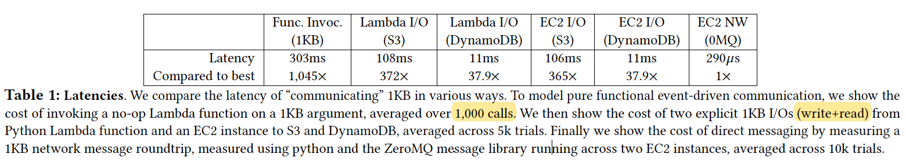
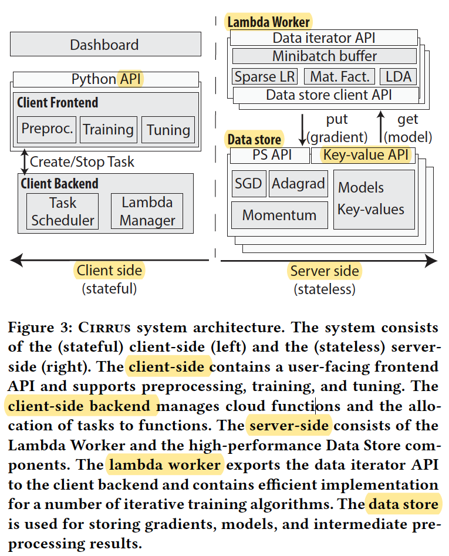
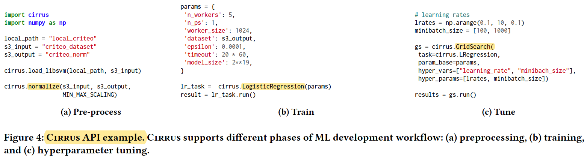
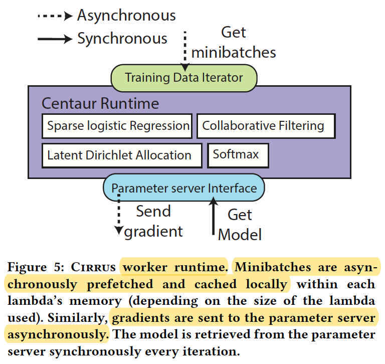
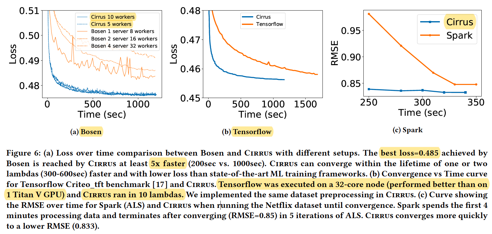

Serverless Computing: One Step Forward, Two Steps Back
A FaaS offering by itself is of little value, since each function execution is isolated and ephemeral. Building applications on FaaS requires data management in both persistent and temporary storage.
As a result, cloud providers are quick to emphasize that serverless is not only FaaS. It is FaaS supported by a “standard library”: the various multitenanted, autoscaling services provided by the vendor.
Three Design Patterns
Embarrassingly parallel functions
In some applications, each function invocation is an independent task and never needs to communicate with other functions.
Orchestration functions
A second class of use cases leverages serverless functions simply to orchestrate calls to proprietary autoscaling services, such as large-scale analytics.
Function Composition
The third category consists of collections of functions that are composed to build applications and thus need to pass along outputs and inputs.
Serverless Is Too Less
Serverless computing today is at best a simple and powerful way to run embarrassingly parallel computations or harness proprietary services.
The limitations in today’s FaaS offerings:
(1). Limited Lifetimes
After 15 minutes, function invocations are shut down by the Lambda infrastructure.
There is no way to ensure that subsequent invocations are run on the same VM. Hence functions must be written assuming that state will not be recoverable across invocations.
(2). I/O Bottlenecks
Recent studies show that a single Lambda function can achieve on average 538Mbps network bandwidth.
Worse, AWS appears to attempt to pack Lambda functions from the same user together on a single VM, so the limited bandwidth is shared by multiple functions.
(3). Communication Through Slow Storage
Two Lambda functions can only communicate through an autoscaling intermediary service.
Hence maintaining state across client calls requires writing the state out to slow storage, and reading it back on every subsequent call.
A number of corollaries follow directly.
FaaS is a Data-Shipping Architecture
FaaS routinely “ships data to code” rather than “shipping code to data.”
FaaS Stymies Distributed Computing
Two functions can work together serverlessly only by passing data through slow and expensive storage.
Case Studies: Model Training
(1). Lambda:
Each Lambda is allocated the maximum lifetime (15 min) and 640MB RAM and runs as many training iterations as possible.
Each iteration in Lambda took 3.08 seconds: 2.49 to fetch a 100MB batch from S3 and 0.59 seconds to run the AdamOptimizer.
We trained the model over 10 full passes of the training data, which translates to 31 sequential lambda executions, each of which runs for 15 minutes, or 465 minutes total latency. This costs $0.29.
(2). Tensorflow
For comparison, we trained the same model on an m4.large EC2 instance, which has 8GB of RAM and 2vCPUs. In this setting, each iteration is significantly faster (0.14 seconds): 0.04 seconds to fetch data from an EBS volume and 0.1 seconds to run the optimizer.
The same training process takes about 1300 seconds (just under 22 minutes), which translates to a cost of $0.04.
Lambda’s limited resources and data-shipping architecture mean that running this algorithm on Lambda is 21× slower and 7.3× more expensive than running on EC2.
Case Studies: Prediction Serving
In practice, prediction serving relies on access to specialized hardware like GPUs, which are not available through AWS Lambda.
To that end, we exercised Lambda’s favored service for batching inputs: AWS Simple Queueing Service (SQS). Our model in this experiment is a simple blacklist of dirty words. SQS only allows batches of 10 messages at a time, so we limited all experiments here to 10-message batches.
The average latency over 1,000 batch invocations for the Lambda application was 559ms per batch if the model was retrieved on every invocation and results written back to S3 and was 447ms when results were placed back into an SQS queue.
The first replaced Lambda’s role in the application with an EC2 machine to receive SQS message batches—this showed a latency of 13ms per batch averaged over 1,000 batches—27× faster than our “optimized” Lambda implementation.
The second experiment used ZeroMQ to replace SQS’s role in the application, and receive messages directly on the EC2 machine. This “serverful” version had a per batch latency of 2.8ms—127× faster than the optimized Lambda implementation.
SQS request rate alone would cost $1,584 per hour.
Case Studies: Distributed Computing
try alternative solutions to achieve distributed computation.

First we measure the pure functional, event-driven programming cost of a 1KB object being handled by a Lambda function invocation—this incurs both I/O and function overheads and is exorbitantly expensive5. Next we measure the cost of explicit I/O from Lambda, namely an average write+read from a long-running function—this is still over an order of magnitude slower than one would like.
We see that latencies from EC2 are almost identical, so the overhead is in the storage service costs, not in Lambda.
Finally we show the latency of (acked) messaging using Python functions directly addressing each other via ZeroMQ. This last cost is close to typical intra-rack datacenter network measurements; studies from even a few years ago report average inter-rack measurements around 1.26ms
In sum, communicating via cloud storage is not a reasonable replacement for directly-addressed networking, even with direct I/O.
DynamoDB as a fine-grained communication medium is incredibly expensive: Supporting a cluster of 1,000 nodes costs at minimum $450 per hour.
Cirrus: a Serverless Framework for End-to-end MLWorkflows
This work proposes Cirrus, a distributed ML training framework that addresses these challenges by leveraging serverless computing.
End-to-end MLWorkflow Challenges
Over-provisioning
The heterogeneity of the different tasks in an MLworkflowleads to a significant resource imbalance during the execution of a training workflow.
Explicit resource management
The established approach of exposing low-level VM resources, such as storage and CPUs, puts a significant burden on ML developers who are faced with the challenge of provisioning, configuring, and managing these resources for each of their ML workloads.
Serverless Computing
major limitations of existing serverless environments:
Small local memory and storage
AWS lambdas can only access at most 3GB of local RAM and 512MB of local disk
Lowbandwidth and lack of P2P communication
We find that the largest AWS Lambda can only sustain 60MB/s of bandwidth. AWS Lambdas do not allow peer-to-peer communication. Thus, common communication strategies used for datacenter ML, such as tree-structured or ring-structured AllReduce communication [43], become impossible to implement efficiently in such environments.
Short-lived and unpredictable launch times
AWS lambdas can take up to several minutes to start after being launched. This means that during training, lambdas start at unpredictable times and can finish in the middle of training. This requires ML runtimes for lambdas to tolerate the frequent departure and arrival of workers.
Lack of fast shared storage
shared storage needs to be low-latency, high-throughput, and optimized for the type of communications in ML workloads.
CIRRUS DESIGN

Design Principles:
- Adaptive, fine-grained resource allocation.
- Stateless server-side backend.
- End-to-end serverless API.
- High scalability.
(1) Worker runtime
The system runtime meets two goals: 1) lightweight, and 2) high-performance.
The worker runtime provides two interfaces.
First, it provides a smart iterator for training datasets stored in S3. This iterator prefetches and buffers minibatches in the lambda’s local memory in parallel with the worker’s computations to mitigate the high latency (>10ms) of accessing S3.
Second, it provides an API for the distributed data store. This API implements: data compression, sparse transfers of data, asynchronous communication and sharding across multiple nodes.
(2) Distributed data store
Cirrus’s data store serves the purpose of storing intermediate data to be shared by all workers.
To achieve low-latency, we deploy our data store in cloud VMs. It achieves latencies as low as 300μs versus ≈ 10ms for AWS S3.
API Example

The first step in the workflow with Cirrus is to load the dataset and upload it to S3.
Cirrus parses the data, automatically creates partitions for it and then uploads it to S3. The front-end partitions datasets in blocks of roughly 10MB.
We chose this size because data partitions in Cirrus are the granularity of data workers transfer from S3. We have found this size allows lambda workers to achieve good network transfer bandwidth. In addition, this keeps the size of each worker’s minibatch cache small.
Cirrus Implementation
(1) Client backend
Lambdas that are launched during training are relaunched automatically when their lifetime terminates (every 15 minutes).
The backend keeps a pool of threads that can be used for responding to requests for new lambda tasks.
(2) Distributed data store
Cirrus’s distributed data store provides an interface supporting a key-value store interface (set/get) and a parameter-server interface (send gradient / get model).
several optimizations:
- multithreaded server that distributes work across many cores
- data compression for the gradientand models
- sparse gradient and model data structures
(3) Worker runtime

For data access, the runtime provides a minibatch-based iterator backed by a local memory ring-buffer that allows workers to access training minibatches with low latency.
In addition, it provides an efficient API to communicate with the distributed data store.
EVALUATION
